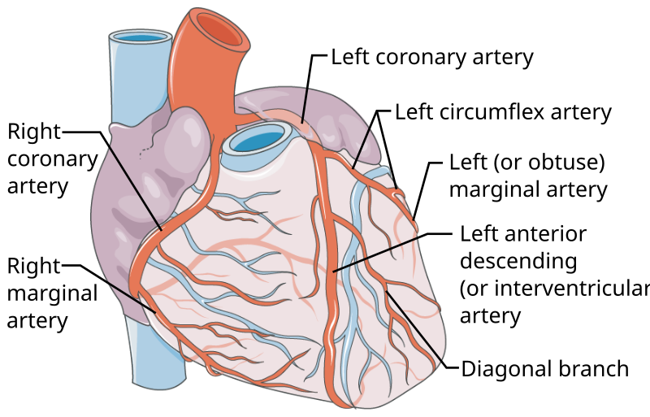

Acute coronary syndrome
Wednesday, February 26, 2025
5:29 PM
|
類型 |
血管阻塞程度 |
ECG 變化 |
心肌酵素（Troponin） |
|
不穩定型心絞痛（Unstable Angina, UA） |
部分阻塞（不完全阻塞） |
可能有ST段壓低或T 波倒置 |
正常 |
|
非ST段抬高型心肌梗塞（NSTEMI） |
部分阻塞（不完全阻塞） |
ST段壓低或T波改變 |
上升 |
|
ST段抬高型心肌梗塞（STEMI） |
完全阻塞（100%） |
ST段抬高 |
上升 |
|
危險因子 |
評分（每項 +1 分） |
|
年齡 ≥ 65 歲 |
+1 |
|
≥ 3 個冠心病危險因子（高血壓、糖尿病、吸菸、高膽固醇、早發冠心病家族史） |
+1 |
|
已知冠狀動脈疾病（CAD，冠狀動脈狹窄 > 50%） |
+1 |
|
過去 24 小時內出現嚴重心絞痛（Angina）≥ 2 次 |
+1 |
|
使用抗血小板藥物（Aspirin）但仍有症狀 |
+1 |
|
心電圖（ECG）表現 ST 段壓低 ≥ 0.5mm |
+1 |
|
初始心肌酵素（Troponin 或 CK-MB）升高 |
+1 |
|
TIMI 分數 |
14 天內心血管事件風險 |
|
0-1 分 |
低風險（4-5%） |
|
2 分 |
中低風險（8%） |
|
3 分 |
中等風險（13%） |
|
4 分 |
中高風險（20%） |
|
5-7 分 |
高風險（26-41%） |
TIMI Score ≥ 3 → 建議做侵入性治療（PCI）
|
變項 |
內容 |
|
年齡 |
年齡越大，風險越高 |
|
心率（Heart rate） |
心率越高，風險越高 |
|
收縮壓（SBP, mmHg） |
血壓越低，風險越高 |
|
Killip 分級 |
依據心臟衰竭嚴重度評估 |
|
心搏停止（Cardiac arrest） |
是否有院外心搏停止 |
|
血清肌酐（Serum Creatinine, mg/dL） |
腎功能不佳者風險較高 |
|
ST 段變化（ST-segment deviation） |
ST 段改變者風險較高 |
|
心肌標誌物（Cardiac biomarkers） |
Troponin 或 CK-MB 陽性者風險較高 |
|
GRACE 總分 |
死亡風險 |
風險等級 |
建議處置 |
|
≤108 |
低風險 |
院內死亡率 <1% |
可考慮藥物保守治療 |
|
109–140 |
中風險 |
院內死亡率 1-3% |
建議 24–72 小時內侵入性策略（PCI） |
|
>140 |
高風險 |
院內死亡率 >3% |
緊急侵入性策略（PCI within 2h） |
|
風險分層 |
治療策略 |
|
高風險（GRACE >140） |
緊急 PCI（2 小時內） |
|
中風險（GRACE 109-140） |
24-72 小時內 PCI |
|
低風險（GRACE <109） |
藥物治療（DAPT、抗凝、Statins） |
|
藥物治療 |
Aspirin + P2Y12 抑制劑 + Heparin（UFH/LMWH） |
|
生物標記 |
升高時間 |
高峰時間 |
持續時間 |
適用情境 |
|
Troponin I/T |
2-4 小時 |
24-48 小時 |
7-14 天 |
最敏感、特異的 MI 標記，但不適合偵測再梗塞 |
|
CK-MB |
4-6 小時 |
24 小時 |
2-3 天 |
適合偵測再梗塞 |
|
Myoglobin |
1-2 小時 |
6-12 小時 |
24 小時 |
最快升高，但特異性低 |

|
缺血區域 |
供應血管 |
ECG 導極變化（STE） |
|
Septum（中隔） |
LAD |
V1、V2 |
|
LV Anterior wall（前壁） |
LAD |
V3、V4 |
|
LV Lateral wall（側壁） |
LCX 或 LAD 遠端 |
V5、V6、I、aVL |
|
LV Inferior wall（下壁） |
RCA（較常見）或 LCX |
II、III、aVF |
|
LV Posterior wall（後壁） |
RCA 或 LCX |
V1、V2（Tall R or STD） |
|
RV（右心室） |
RCA 近端 |
V4R（右側導極） |
|
治療 |
適應症 |
時間限制 |
備註 |
|
Primary PCI（首選） |
具 STEMI 診斷，且可在 120 分鐘內完成 PCI |
Door-to-balloon time ≤90 分鐘 |
最佳療法，較少出血風險 |
|
Fibrinolysis（溶栓治療） |
無法在 120 分鐘內完成 PCI |
Door-to-needle time ≤30 分鐘 |
適用於無法立即進行 PCI 的情況 |
|
步驟 |
時間目標 |
|
到院後 10 分鐘內（Door-to-ECG） |
完成 12 導程 ECG，確認 STEMI 診斷 |
|
到院後 30 分鐘內（Door-to-Needle） |
若適用 tPA（血栓溶解劑），應完成投藥 |
|
到院後 90 分鐘內（Door-to-Balloon） |
若適用 Primary PCI，應完成 氣球擴張 |
|
轉院病人（Door-to-Balloon） |
需在 120 分鐘內完成 PCI |
|
縮寫 |
藥物 |
作用 |
|
M |
Morphine |
緩解疼痛，減少交感興奮 |
|
O |
Oxygen |
僅限於血氧 <90% |
|
N |
Nitroglycerin（NTG） |
緩解心絞痛，但不可用於右心室梗塞 |
|
A |
Aspirin（300 mg） + P2Y12 受體拮抗劑 |
DAPT（雙重抗血小板治療），如 Clopidogrel、Ticagrelor |
|
B |
Beta-blocker |
減少心肌氧耗，避免再發生心律不整 |
|
特徵 |
UA（不穩定型心絞痛） |
NSTEMI（非ST段抬高型心肌梗塞） |
STEMI（ST段抬高型心肌梗塞） |
|
血管阻塞程度 |
部分阻塞 |
部分阻塞 |
完全阻塞（100%） |
|
症狀 |
胸痛<30 min |
胸痛<30 min |
胸痛>30 min |
|
心肌壞死 |
無 |
有 |
有（更嚴重） |
|
心肌酵素 |
正常 |
上升 |
上升 |
|
ECG 變化 |
可能正常 / ST段depression / T波inversion |
ST段depression/ T波inversion |
ST 段elevation（2 個相鄰導程） |
|
主要治療 |
抗血小板、抗凝、硝酸鹽 |
抗血小板、抗凝、β 阻斷劑 |
急診再灌注治療（PCI / tPA） |
|
藥物類別 |
代表藥物 |
作用機制 |
臨床作用 |
副作用 |
注意事項 |
|
抗血小板藥物 |
Aspirin |
抑制COX-1，降低 TXA2 生成 |
減少血小板聚集，預防血栓形成 |
胃潰瘍、出血風險、氣喘（AERD） |
長期使用需注意消化道潰瘍，可與 PPI 併用 |
|
|
P2Y12 抑制劑 |
阻斷ADP受體（P2Y12），抑制血小板聚集 |
與 Aspirin 併用（DAPT），預防支架血栓 |
出血、血小板減少症 |
選擇藥物依患者特徵 |
|
P2Y12 抑制劑
|
Clopidogrel |
不可逆抑制 P2Y12 |
需肝臟 CYP2C19 代謝，藥效延遲 |
CYP2C19 poor metabolizer 反應較差 |
基因多型性影響藥效，CYP2C19 poor metabolizer 避免使用 |
|
P2Y12 抑制劑
|
Prasugrel |
不可逆抑制 P2Y12，作用強於 Clopidogrel |
較 Clopidogrel 更快、更強，但出血風險高 |
出血風險較高 |
75 歲以上、低體重（<60 kg）、卒中病史禁用 |
|
P2Y12 抑制劑
|
Ticagrelor |
可逆抑制P2Y12，非前驅藥（直接作用） |
較 Clopidogrel 更快、更強，不受 CYP2C19 影響 |
呼吸困難（Dyspnea）、高尿酸血症、出血風險 |
需 BID 服用，依從性較差 |
|
抗凝劑 |
UFH |
透過 Antithrombin III 抑制Factor IIa（Thrombin）& Xa |
速效，PCI 前常用 |
出血、HIT |
需監測 aPTT，HIT 風險高時避免使用 |
|
抗凝劑 |
Enoxaparin（LMWH） |
主要抑制 Factor Xa，部分抑制 Thrombin（IIa） |
半衰期較 UFH 長，皮下注射給藥 |
出血、腎功能不佳者需調整劑量 |
肌酐清除率（CrCl）<30 mL/min 時調整劑量 |
|
抗凝劑 |
Bivalirudin |
直接抑制 Thrombin（IIa），不經過 Antithrombin |
可替代 Heparin，降低出血風險 |
出血、腎功能不佳者需調整劑量 |
常用於 HIT 風險高者 |
|
血管擴張劑 |
Nitroglycerin（NTG） |
轉換為NO，活化 cGMP，血管擴張 |
緩解心絞痛、降低心肌耗氧量 |
頭痛、低血壓、反射性心動過速 |
禁忌：使用 PDE5 抑制劑者（如 Sildenafil） |
|
β 阻斷劑 |
Metoprolol（選擇性 β1 阻斷劑） |
抑制β1受體，減少心肌收縮力與心率 |
降低心肌氧需求，減少猝死風險 |
禁忌：心源性休克、急性心衰竭、嚴重支氣管痙攣 |
合併低血壓或心動過緩者應避免使用 |
|
ACEI |
Enalapril, Ramipril |
抑制ACE，降低 Angiotensin II 生成 |
降低血壓、減少心臟重塑，適用於 LVEF <40% 或糖尿病患者 |
乾咳（ACEI 特有）、高血鉀、低血壓、腎功能惡化 |
腎動脈狹窄患者禁用 |
|
ARB |
Losartan, Valsartan |
阻斷Angiotensin II AT1 受體 |
作用類似 ACEI，但無乾咳副作用 |
高血鉀、低血壓、腎功能惡化 |
腎功能不佳患者需監測血鉀 |
|
Statin（HMG-CoA 還原酶抑制劑） |
Atorvastatin 40–80 mg |
抑制HMG-CoA 還原酶，減少肝臟膽固醇合成，增加 LDL 受體表達 |
顯著降低 LDL-C，穩定斑塊，抗發炎 |
肝酵素上升、肌肉痠痛（myopathy）、橫紋肌溶解（罕見） |
需監測肝功能及 CK（若有肌肉症狀） |
|
Statin |
Rosuvastatin 20–40 mg |
效力更強的 Statin，類似 Atorvastatin |
高強度降脂，適用於 ACS 患者 |
腎功能不佳者須調整劑量，類似 Atorvastatin副作用 |
CrCl <30 mL/min 時，建議減量 |
REFERENCE：
使用 OneNote 建立。
{kind=link}